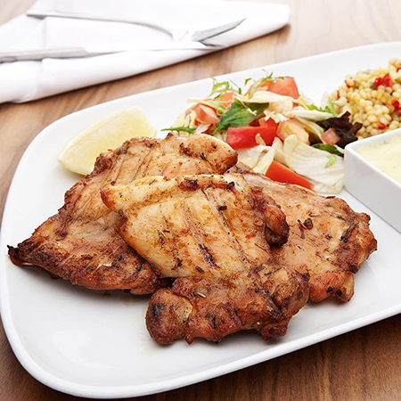

Kolbasti
Chicken kolbasti is a traditional dish from the Egyptian countryside.
- 3 cornish game hens, halved
- 1 level teaspoon salt
- 1/4 level teaspoon pepper
- 2 tablespoons lemon juice
- 2 tablespoons onion juice
- 1 & 1/2 oz butter
- 1/2 pint water
Pound each cornish game hen flat with a meat mallet. Brush hens with mixture of salt, pepper, lemon and onion juices. Let stand for at least 15 minutes. Place hens in hot butter in heavy pan; cover and cook until brown, then turn hens; cover and brown other side. When brown, add water and continue cooking until hens are done. Serve with natural sauce or sauce thickened with browned flour.